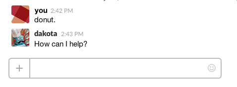

Dakota Ling
I work at Primal Screen
dakota@primalscreen.com
@dakota
Chat the word 'donut' for help
...are awesome developers in the making.
What is a cool interactive thing that you've seen recently?
ringmaster.creativecircus.edu/class/162
How to see what's going on behind the scenes
In macOS 10.12 (Sierra) and up, use the following key combo in Finder:
CMD + SHIFT + .
In File Explorer, click the View tab and click the "Hidden Items" checkbox.
Git is a version control system.
Can be used without a website or app.
What I mean when I just refer to 'git'.
There are different ways to visualize it.
Starting a Git repository without Github:
cdand drag your project folder into terminal.
git init
That's it, you now have a (local) git repository
You can use Terminal commands from here, With commands like:
git status
git add -A
git commit -m "Initial Commit!"
You can also just drag into Github Desktop
.git and .gitignore
This is your git repository.
Includes config files and your project history.
Prevents certain files and folders (like node-modules) from being added to the repo.
Right click on files in Github Desktop and click 'ignore'.
Can edit this directly.
Apps to visualize all those commands.
What I mean when I say 'the app' or 'Github Desktop'
Github Desktop: desktop.github.com
Different clients offer different visualizations and more in-depth commands.
Use what you're comfortable with.
I like Github Desktop for general use, SourceTree for resolving conflicts, and the command line for any really weird stuff.
Places to store all those things
Github: github.com
Different hosts offer different features around managing your repositories.
And connecting it to github.com
Reference these slides as you need to.
Or how to start completely fresh.
That's it. Start adding project files.
Or how to create a git repository from an existing project
cd path/to/your/project
git init
This will create a repository on github.com
Or how to add an existing project to an existing repo
cd path/to/your/project
git init
git remote add https://github.com/username/reponame.git
This will link your local project with your remote repo.
Cloning, committing, pushing, pulling.
Download a LOCAL copy of a git repository from a REMOTE server, including all history.
cd path/to/your/project git clone https://github.com/CyanLetter/WebDev3_Spring2018
Save a particular set of changes in your local copy. Does not affect the remote yet.
Commit early, commit often.
git add [files to add] git commit -m "Your message"
git pull git push origin master
Restoring files to a previous version
There are about a million ways to do this.
Most of them are confusing or dangerous.
In the app, right click on a file and select Discard Changes, or Discard All
In the app, you can:
Best to do for only your most recent commit, to avoid merge conflicts.
Lots of dangerous ways to do this that rewrite history.
Cannot be done entirely in Github Desktop
In the history tab, right click the commit you want to return to and select 'Copy SHA'
In Terminal:
git revert --no-commit 0766c053..HEAD
Make sure to include the '..HEAD' after your SHA
The app will create a new commit for you.
Making an alternate timeline
The master branch should never be broken.
Branches let you work without breaking master.
Great for working in teams, still helpful if it's just you.
Always branch from master.
Always update from master (in app).
Setting up a merge so that it can be reviewed.
Always make a request to merge your current branch into the target branch.
Two people changed the same thing. How fix?
Things on top are yours, things on bottom are theirs.
Delete what you don't want to keep.
<<<<<<< HEAD Stuff from your laptop (LOCAL) ======= Stuff from the server (REMOTE) >>>>>>> origin/master
Use a text editor for local conflicts.
Github has a web editor for resolving pull request conflicts.
Making a copy for yourself to edit.
This is how open source projects accept changes from outsiders.
On github. Creates a copy of the project that you own.
When you sync, you can see how many commits you are behind the original repo.
In the app, you can update from the original.
You can request to merge your changes back into the original repo.
Best to do this from a branch.
This is how people fix bugs and add features in open source projects.
Also, next class we are learning Sass. Get hyped!